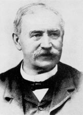

Quién es quién en la historia de los Montes Bocineros
Una guía rápida para saber quién aparece en la investigación y qué peso tiene cada persona: documento medieval, transmisión, historiografía, recepción literaria o síntesis moderna.
No todos los nombres tienen el mismo valor documental.
Documento o transmisión: sirve para comprobar texto.
Historiografía: ordena o interpreta tradición.
Recepción: muestra cómo se consolida una idea.
Lectura rápida
Personajes y autores principales
Estas fichas no sustituyen una biografía completa. Solo explican qué función cumple cada nombre dentro del problema de las bocinas y los montes. Cuando hay retrato libre verificado, se muestra con procedencia; cuando no existe retrato histórico localizado, pueden usarse recreaciones visuales generadas con IA, siempre marcadas como apoyo didáctico no documental.
Recreación visual generada con IA. No es un retrato histórico verificado.Fuente medieval transmitida
Juan Núñez de Lara
c. 1313–1350
Perfil: Señor de Vizcaya y figura asociada al Capitulado/Cuaderno de 1342.
Por qué importa aquí: Importa porque el texto transmitido bajo su nombre contiene la fórmula de las cinco vozinas en contexto de Junta General de Garnica/Gernika.
Precaución: Su valor aquí no es biográfico, sino documental: el texto conservado se conoce por transmisión posterior, no como original físico autógrafo de 1342.
Sobre la imagen: No se conserva aquí un retrato documental verificado de Juan Núñez de Lara. Esta imagen es una recreación artística generada con IA para acompañar la explicación histórica. No debe interpretarse como fuente documental ni como representación auténtica de su aspecto real.
Recreación visual generada con IA. No es un retrato histórico verificado.Transmisión documental
Juan Ruiz de Anguiz
activo en 1600
Perfil: Escribano que interviene en la copia realizada en Gernika el 4 de noviembre de 1600.
Por qué importa aquí: Es clave para explicar cómo llegan hasta nosotros el Fuero Viejo, el Cuaderno de Juan Núñez de Lara y otros textos forales.
Precaución: No debe confundirse la copia de 1600 con el original medieval. La copia transmite textos anteriores, pero no elimina la necesidad de crítica documental.
Sobre la imagen: No existe retrato histórico verificado de Juan Ruiz de Anguiz localizado para este proyecto. Esta imagen es una recreación didáctica inspirada en un escribano de comienzos del siglo XVII. No debe interpretarse como fuente documental ni como representación auténtica de su aspecto real.
Recreación visual generada con IA. No es un retrato histórico verificado.Historiografía vizcaína
Juan Ramón de Iturriza y Zabala
1741–1812
Perfil: Historiador vizcaíno, autor de una Historia General de Vizcaya manuscrita en el siglo XVIII.
Por qué importa aquí: Aporta contexto sobre merinos, merindades, gobierno antiguo, Guernica/Gernika y las bocinas dentro de la tradición foral.
Precaución: En los pasajes revisados no se ha localizado la lista de Gorbea, Oiz, Sollube, Ganecogorta y Colisa. Sirve como contexto institucional, no como primera lista de montes.
Sobre la imagen: No existe retrato histórico verificado de Juan Ramón de Iturriza y Zabala localizado para este proyecto. Esta imagen es una recreación didáctica inspirada en un erudito vizcaíno de finales del siglo XVIII. No debe interpretarse como fuente documental ni como representación auténtica de su aspecto real.
Retrato de Pascual Madoz, óleo de José Nin y Tudó, 1873. Fuente: Wikimedia Commons / Congreso de los Diputados. Dominio público.Fuente puente
Pascual Madoz Ibáñez
1806–1870
Perfil: Político, estadista y autor del Diccionario geográfico-estadístico-histórico de España y sus posesiones de Ultramar.
Por qué importa aquí: En el Tomo IX, entrada Guernica, recoge que cinco heraldos subían a “las alturas” y tañían bocinas para llamar a Junta General o Catzarra.
Precaución: Es anterior a Trueba y muy útil como puente hacia una lectura territorial, pero no enumera los cinco montes tradicionales.
Tradición bajomedieval
Lope García de Salazar
1399–1476
Perfil: Cronista y banderizo vizcaíno, autor de Bienandanzas e fortunas.
Por qué importa aquí: Sitúa las cinco vozinas en el relato de Don Çuria/Jaun Zuria, vinculadas a cinco merindades y a Gernika.
Precaución: Es clave para la capa legendaria e institucional, pero no enumera Gorbea, Oiz, Sollube, Ganecogorta y Colisa.
Crónica moderna temprana
Juan Íñiguez de Ibargüen y García Fernández Cachopín
Crónica redactada entre 1580 y 1620
Perfil: Autores asociados a la crónica conocida como Ibargüen-Cachopín.
Por qué importan aquí: Aportan vocabulario y contexto sobre adarrak, cuernos grandes a manera de bocinas, y sobre la bocina como signo de prestigio.
Precaución: Su crónica mezcla historia, genealogía, tradición oral y elementos legendarios; no documenta la lista moderna de cinco montes.

Retrato de Antonio de Trueba, anterior a 1890. Fuente: Wikimedia Commons. Dominio público.Lista localizada
Antonio de Trueba
1819–1889
Perfil: Escritor, cronista y figura central de la cultura literaria vasca del siglo XIX.
Por qué importa aquí: En 1872 ofrece la primera lista localizada hasta ahora de los cinco montes tradicionales: Gorbea, Oiz, Sollube, Ganecogorta y Colisa.
Precaución: La fórmula “se cree fuesen” obliga a leerlo con cautela: no prueba por sí sola una lista medieval oficial.
Retrato localizado, no incorporado hasta verificar condiciones de reutilización
Recepción decimonónica
Juan Eustaquio Delmas
Bilbao, 1820 – Madrid, 1892
Perfil: Periodista, escritor e impresor bilbaíno. Impulsó publicaciones como Irurac bat y participó en redes culturales junto a autores como Trueba.
Por qué importa aquí: Su guía histórico-descriptiva de 1864 ayuda a entender el contexto territorial e institucional de Bizkaia antes de la fijación literaria de Trueba.
Precaución: El facsímil completo queda revisado en : no se han localizado bocinas/vozinas ni la lista Gorbea, Oiz, Sollube, Ganecogorta y Colisa. Sirve como contexto, no como primera lista.
Crónica antigua pendiente
Lope García de Salazar
1399–1476
Perfil: Cronista banderizo vizcaíno, autor de Bienandanzas e fortunas.
Por qué importa aquí: Interesa porque algunas tradiciones sobre Jaun Zuria, Padura/Arrigorriaga y las bocinas se han vinculado a la cronística bajomedieval.
Precaución: Hasta localizar la cita exacta, no debe usarse como prueba cerrada de los cinco montes concretos.
Síntesis moderna
Javier Barrio Marro y Goio Bañales García
estudio contemporáneo
Perfil: Autores del estudio El tañido de las cinco bocinas. Símbolo de Bizkaia.
Por qué importa aquí: Son una referencia secundaria clave para entender la tradición, los documentos citados y la recepción moderna de las cinco bocinas.
Precaución: Su estudio ayuda a interpretar las fuentes, pero no sustituye la lectura directa de los documentos primarios.
Criterio de imágenes y recreaciones IA
Solo se incorporan retratos históricos cuando la fuente declara una situación reutilizable clara. Cuando no existe retrato histórico verificado localizado y la imagen ayuda a entender época, oficio o ambiente, se pueden usar recreaciones visuales generadas con IA, siempre señalizadas de forma visible como recurso didáctico no documental.
Regla editorial: una recreación IA nunca sustituye al documento real ni debe presentarse como retrato auténtico. En esta página se mantiene esa distinción para Juan Núñez de Lara, Juan Ruiz de Anguiz y Juan Ramón de Iturriza y Zabala.
Cómo usar esta página
Para leer la web sin perderse, separa siempre tres niveles: quién transmite un documento, quién interpreta una tradición y quién consolida una imagen literaria o cultural. Esa separación evita convertir una fuente del siglo XIX en prueba directa de una práctica medieval.
Apoyar el proyecto¿Te ha servido esta investigación?Ayuda a mantener y ampliar este trabajo documental.